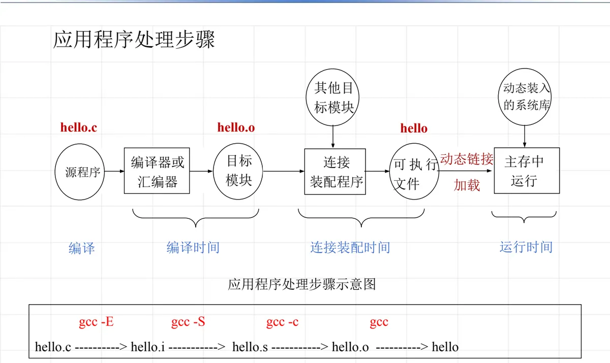
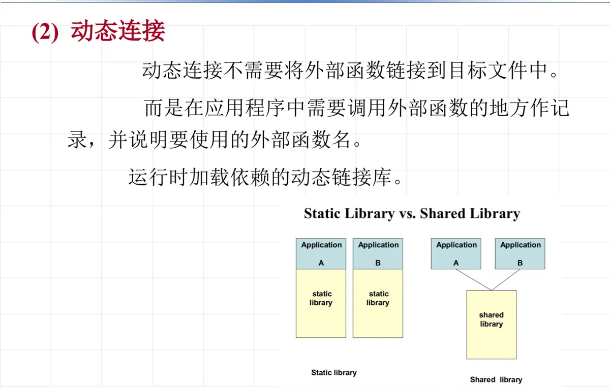

操作系统原理 · 第 3 章 用户接口
3.2 应用程序的处理
上一节讲的是系统怎么把环境准备好，这一节转到用户的另一侧：应用程序从一段源码变成能跑的程序，中间要经过哪些步骤？把这条链条看清楚，才能理解「编译时间」「连接装配时间」「运行时间」三者的分工，也才能理解静态连接和动态连接为什么会有不同的代价。
1. 处理应用程序的步骤
一个应用程序从源程序到得出计算结果，要经过编译、连接、运行三个环节，对应的三个时段分别是编译时间、连接装配时间和运行时间。以最常见的 C 程序为例，源程序 hello.c 由编译器或汇编器处理，生成目标模块 hello.o；连接装配程序再把目标模块与所需的其他模块装配起来，形成可执行文件 hello；最后由加载程序把它装入主存运行。整个过程可以画成下面这条流水线：

这条流水线用 gcc 的命令链看得更清楚，四个命令正好对应四个阶段：
gcc -E gcc -S gcc -c gcc
hello.c ------> hello.i -------> hello.s --------> hello.o --------> hello其中 gcc -E 做预处理、gcc -S 生成汇编程序、gcc -c 汇编成目标模块、gcc 完成连接。前面两步合并起来就是「编译时间」里做的事，产出的是目标模块。
（1）连接：把目标模块装配成主存映像文件
把主程序和其他所需要的子程序、例行程序连接装配在一起，使之成为一个可执行的、完整的主存映像文件。这一步由连接装配程序完成，是整个链条中承上启下的环节：没有它，编译器产出的目标模块还只是一堆各自独立的代码和数据。
（2）运行：调入主存，得出结果
把连接得到的主存映像文件调入主存，启动运行，得出计算结果。这一步就是运行时间，也是应用程序真正在操作系统管理之下使用处理器、内存和设备资源的阶段。
2. 连接类型：静态连接与动态连接
连接的方式决定了外部函数是什么时候、以什么形式进入可执行文件的，由此分为两类。
（1）静态连接
把所有外部调用的函数都连接到目标文件中，形成一个完整的可执行文件，这样运行时就不再需要其他的链接库。
静态连接有明显的缺点：既然所需的外部函数已经被链接进目标文件，那么当多个应用程序调用了同一个库中的外部函数时，每个应用程序的目标文件里都会包含一份这个外部函数的代码，主存和磁盘上因此出现大量重复。
（2）动态连接
动态连接不需要把外部函数链接到目标文件中，而是在应用程序中需要调用外部函数的地方作记录，并说明要使用的外部函数名；真正加载依赖的动态链接库发生在运行时。这样同一个库可以被多个程序共享，代价是运行时多了一次装入和地址绑定的开销。

把两者放在一起看，区别就清楚了：静态连接用「多占空间」换「运行时省事」，动态连接用「运行时装入的开销」换「多个程序共享同一份库代码」。这也是为什么同一份库函数的代码在静态连接下会随程序数量成倍增加，而在动态连接下始终只有一份。
3. 从基础到方向：Linux 下的学习路线
上面这些只是应用程序开发的基础，选定自己的方向后还要继续深入：图形界面开发 GUI（X11、SDL2、GTK、QT）；数据库、多媒体、网络安全、3D、图像处理、人工智能，乃至操作系统本身等领域。每个方向或领域都有 1～2 个代表性的开源软件，学习的路径是读开源软件、学算法、看论文，并动手把它实现出来。
本节小结
- 处理应用程序分三个时段：编译时间（源程序经编译器或汇编器得到目标模块）、连接装配时间（连接装配程序把主程序、子程序、例行程序装配成完整的主存映像文件）、运行时间（调入主存启动运行，得出结果）。
- gcc 命令链把这条流水线落实为
hello.c → hello.i → hello.s → hello.o → hello，依次对应预处理、编译、汇编、连接四个命令。 - 静态连接把所有外部调用的函数都并入目标文件，运行时不再需要链接库；代价是多个程序重复包含同一份外部函数代码。
- 动态连接只在调用处记录外部函数名，运行时才加载依赖的动态链接库，多个程序共享同一份库代码。
- 基础之上还要选方向深入（GUI、数据库、多媒体、网络安全、3D、图像处理、人工智能、操作系统本身等），路径是学开源软件、算法与论文，并动手实现。